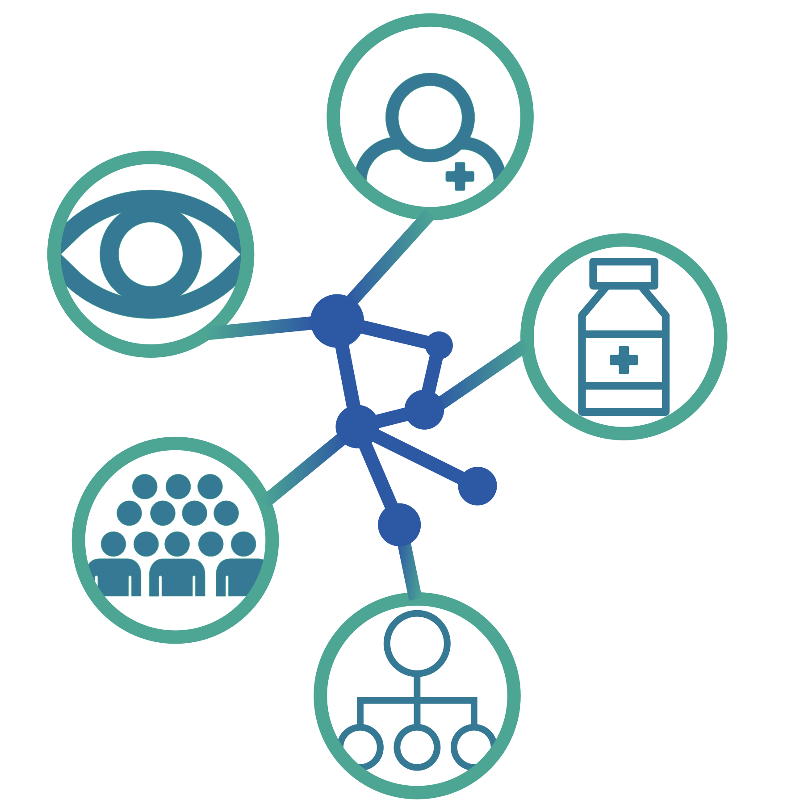
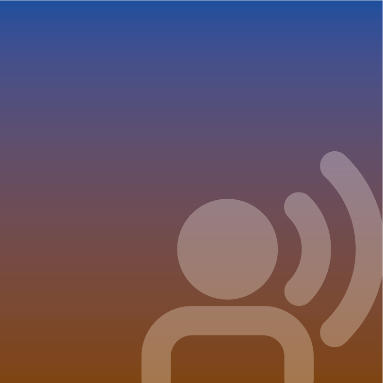
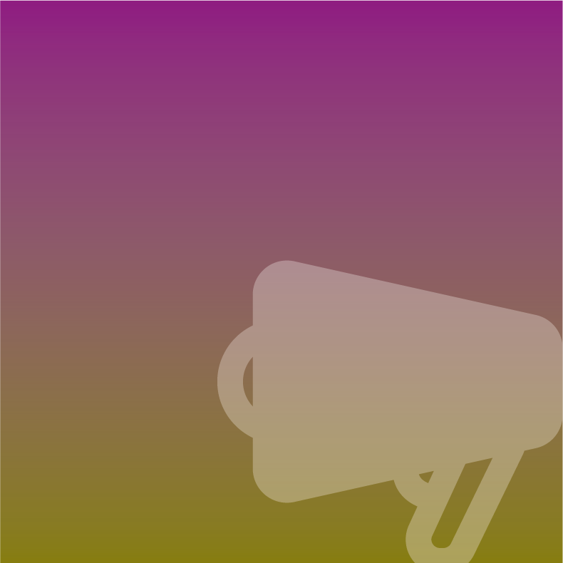

Desde la antropología, este proyecto colabora con pacientes psiquiátricos para comprender sus experiencias y promover cuidados más horizontales, humanos y comunitarios. Busca amplificar sus voces y transformar los espacios psiquiátricos en entornos de apoyo y toma de decisiones compartida.

REDES es un proyecto que nace con el propósito de acompañar y comprender las experiencias de las personas que habitan los centros psiquiátricos, quienes enfrentan dinámicas que dificultan su participación activa y su reconocimiento como sujetos con voz propia.
Aunque existen normativas que fomentan una atención centrada en la persona y su comunidad, siguen persistiendo barreras estructurales que pueden dificultar la implementación de estos principios en la práctica cotidiana.
Redes busca generar espacios de diálogo, reflexión, formación y acción que permitan dar visión y poder transformar estas realidades.
De esta manera, el proyecto va a integrar el análisis reflexivo con acciones concretas, con la intención de promover una mejora continua y dar fuerza a entornos más participativos e inclusivos en el ámbito de la salud mental.
Entre lo psicológico y lo social
Este proyecto pues, queda vertebrado por la necesidad (y reivindicación desde REDES) de constatar la realidad social en los procesos sanitarios.
Cuando tornamos la mirada a la historia de la psiquiatría, vemos importantes movimientos en demandando una reforma al modelo psiquiátrico, algunos de ellos quedan presentes abajo.
Escuchar
Realización de estudios de necesidades y exploración a través de la interacción con los residentes en los centros psiquíatricos
Formación
Formar a los profesionales del sector de la salud mental en cuestiones sociales y de interacción con los pacientes para establecer bases y necesidades
Centros
Reformar los centros psiquíatricos en sus aspectos más importantes y más necesitados por los internos como la distribución de lugares sociales y de organización
Comunidad
Reformas en la comunidad donde se ubican estos centros para buscar la inclusión e interacción entre la comunidad social y la interna a través de la promoción de espacios compartidos

Socialización
Programas de socialización entre los internos y establecimiento de actividades necesarias y activas que funcionen dentro y fuera de las comunidades

Concienciación
Divulgación de las realidades, necesidades y experiencias de los pacientes internos como foco social de cuestionamiento y acción colectiva